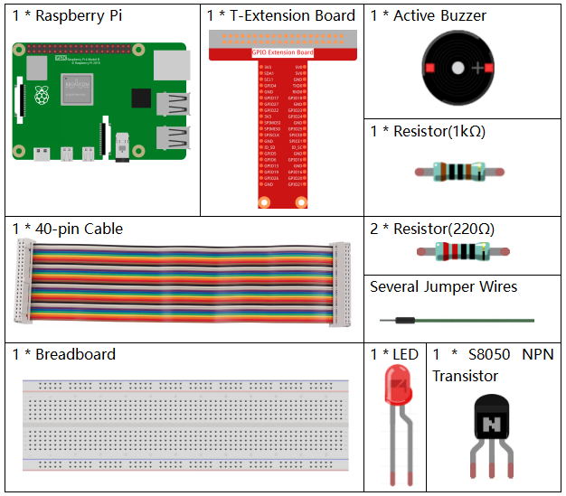
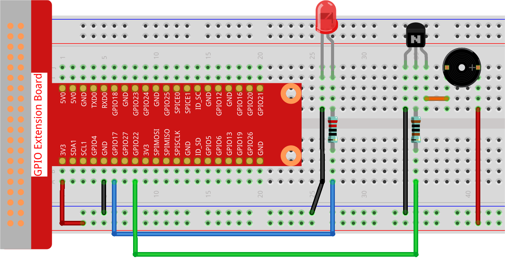

Nota
Ciao, benvenuto nella Community SunFounder di appassionati di Raspberry Pi, Arduino & ESP32 su Facebook! Approfondisci le tue conoscenze su Raspberry Pi, Arduino ed ESP32 insieme a tanti altri appassionati.
Perché unirsi a noi?
Supporto Esperto: Risolvi problemi post-vendita e affronta sfide tecniche con il supporto della nostra community e del nostro team.
Impara e Condividi: Scambia consigli e tutorial per migliorare le tue competenze.
Anteprime Esclusive: Accedi in anteprima agli annunci di nuovi prodotti e ai primi sguardi sulle novità.
Sconti Esclusivi: Godi di sconti esclusivi sui nostri ultimi prodotti.
Promozioni Festive e Giveaway: Partecipa a giveaway e promozioni per le festività.
👉 Pronto per esplorare e creare con noi? Clicca [Qui] e unisciti oggi!
3.1.11 Generatore di Codice Morse
Introduzione
In questo progetto, creeremo un generatore di codice Morse, dove puoi digitare una serie di lettere in inglese nel Raspberry Pi per visualizzarle in codice Morse.
Componenti Necessari
In questo progetto, abbiamo bisogno dei seguenti componenti.
{kind=link}
Schema di Collegamento
T-Board Name |
physical |
wiringPi |
BCM |
GPIO17 |
Pin 11 |
0 |
17 |
GPIO22 |
Pin 15 |
3 |
22 |

Procedure Sperimentali
Passo 1: Costruisci il circuito. (Fai attenzione ai poli del buzzer: quello con l’etichetta + è il polo positivo e l’altro è il negativo.)
Passo 2: Apri il file del codice.
cd ~/davinci-kit-for-raspberry-pi/python-pi5
Passo 3: Esegui.
sudo python3 3.1.11_MorseCodeGenerator.py
Dopo l’avvio del programma, digita una serie di caratteri, e il buzzer e il LED invieranno i segnali corrispondenti in codice Morse.
Avvertimento
Se compare l’errore RuntimeError: Cannot determine SOC peripheral base address, consulta Se gpiozero non funziona.
Codice
#!/usr/bin/env python3
from gpiozero import Buzzer, LED
import time
# Inizializzazione del Buzzer e del LED sui pin GPIO
BeepPin = Buzzer(22)
ALedPin = LED(17)
# Rappresentazione in codice Morse per i caratteri
MORSECODE = {
'A': '01', 'B': '1000', 'C': '1010', 'D': '100', 'E': '0', 'F': '0010', 'G': '110',
'H': '0000', 'I': '00', 'J': '0111', 'K': '101', 'L': '0100', 'M': '11', 'N': '10',
'O': '111', 'P': '0110', 'Q': '1101', 'R': '010', 'S': '000', 'T': '1',
'U': '001', 'V': '0001', 'W': '011', 'X': '1001', 'Y': '1011', 'Z': '1100',
'1': '01111', '2': '00111', '3': '00011', '4': '00001', '5': '00000',
'6': '10000', '7': '11000', '8': '11100', '9': '11110', '0': '11111',
'?': '001100', '/': '10010', ',': '110011', '.': '010101', ';': '101010',
'!': '101011', '@': '011010', ':': '111000',
}
def on():
""" Turn on the buzzer and LED. """
BeepPin.on()
ALedPin.on()
def off():
""" Turn off the buzzer and LED. """
BeepPin.off()
ALedPin.off()
def beep(dt): # dt indica il tempo di ritardo.
"""
Produce a beep sound and LED flash for the specified duration.
:param dt: Duration for the beep and flash.
"""
on()
time.sleep(dt)
off()
time.sleep(dt)
def morsecode(code):
"""
Convert the input code into Morse code and signal it using the buzzer and LED.
:param code: The text to be converted to Morse code.
"""
pause = 0.25
for letter in code:
for tap in MORSECODE[letter]:
if tap == '0':
beep(pause / 2) # Beep corto per il punto
if tap == '1':
beep(pause) # Beep lungo per la linea
time.sleep(pause) # Pausa tra le lettere
def destroy():
""" Clean up resources on script termination. """
print("")
BeepPin.off()
ALedPin.off()
try:
while True:
code = input("Please input the messenger:")
code = code.upper() # Conversione in maiuscolo per il lookup del codice Morse
print(code)
morsecode(code)
except KeyboardInterrupt:
destroy()
Spiegazione del Codice
Questo segmento include l’importazione delle librerie essenziali per implementare i ritardi e la gestione dei thread. Inoltre, importa le classi LED, Button e TonalBuzzer dalla libreria gpiozero, fondamentali per controllare i dispositivi GPIO sul Raspberry Pi.
#!/usr/bin/env python3 from gpiozero import Buzzer, LED import time
Inizializza il buzzer sul pin GPIO 22 e il LED sul pin GPIO 17, consentendo il controllo di questi componenti.
# Inizializzazione del buzzer e del LED ai pin GPIO BeepPin = Buzzer(22) ALedPin = LED(17)
Definisce la struttura
MORSE, un dizionario contenente le rappresentazioni del codice Morse per i caratteri A-Z, i numeri 0-9 e simboli come “?”, “/”, “:”, “,”, “.”, “;”, “!”, “@”, dove0indica un punto e1indica una linea.# Rappresentazione del codice Morse per i caratteri MORSECODE = { 'A': '01', 'B': '1000', 'C': '1010', 'D': '100', 'E': '0', 'F': '0010', 'G': '110', 'H': '0000', 'I': '00', 'J': '0111', 'K': '101', 'L': '0100', 'M': '11', 'N': '10', 'O': '111', 'P': '0110', 'Q': '1101', 'R': '010', 'S': '000', 'T': '1', 'U': '001', 'V': '0001', 'W': '011', 'X': '1001', 'Y': '1011', 'Z': '1100', '1': '01111', '2': '00111', '3': '00011', '4': '00001', '5': '00000', '6': '10000', '7': '11000', '8': '11100', '9': '11110', '0': '11111', '?': '001100', '/': '10010', ',': '110011', '.': '010101', ';': '101010', '!': '101011', '@': '011010', ':': '111000', }
La funzione
on()accende il buzzer e il LED. La funzioneoff()è usata per spegnere il buzzer e il LED.def on(): """ Turn on the buzzer and LED. """ BeepPin.on() ALedPin.on() def off(): """ Turn off the buzzer and LED. """ BeepPin.off() ALedPin.off()
Definisce la funzione
beep()per far emettere al buzzer e al LED suoni e lampeggi in un determinato intervallo didt.def beep(dt): # dt per il tempo di ritardo. """ Produce a beep sound and LED flash for the specified duration. :param dt: Duration for the beep and flash. """ on() time.sleep(dt) off() time.sleep(dt)
La funzione
morsecode()gestisce il codice Morse dei caratteri in ingresso, emettendo un segnale di suoni o luci per ogni “1” del codice e un segnale breve per ogni “0”. Ad esempio, inserendo “SOS”, si otterrà un segnale di tre punti, tre linee, e di nuovo tre punti: “ · · · - - - · · · ”.def morsecode(code): """ Convert the input code into Morse code and signal it using the buzzer and LED. :param code: The text to be converted to Morse code. """ pause = 0.25 for letter in code: for tap in MORSECODE[letter]: if tap == '0': beep(pause / 2) # Suono breve per il punto if tap == '1': beep(pause) # Suono lungo per la linea time.sleep(pause) # Pausa tra lettere
Definisce una funzione chiamata
destroyche spegne sia il buzzer che il LED. Questa funzione è progettata per essere chiamata alla terminazione dello script per assicurarsi che i pin GPIO non rimangano in uno stato attivo.def destroy(): """ Clean up resources on script termination. """ print("") BeepPin.off() ALedPin.off()
Quando si digitano i caratteri rilevanti con la tastiera,
upper()convertirà le lettere in maiuscolo.print()visualizza il testo chiaro sullo schermo del computer e la funzionemorsecode()fa sì che il buzzer e il LED emettano segnali in codice Morse.try: while True: code = input("Please input the messenger:") code = code.upper() # Conversione in maiuscolo per il codice Morse print(code) morsecode(code) except KeyboardInterrupt: destroy()